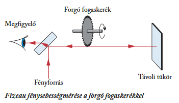

Arisztotelész úgy vélte, hogy a fény terjedése azonnali, nincs szüksége időre. Ez az elképzelés élt több ezer évig
Zacharias Janssen nevéhez kötik a mikroszkóp feltalálását. Az eszköz új távlatokat nyitott a mikrovilág megfigyelésében.
Galileo Galilei 1609-ben csillagászati megfigyelésekre használta a távcsövet, majd Johannes Kepler 1611-ben továbbfejlesztette.
Olaf Römer a Jupiter Io holdjának fogyatkozásait vizsgálva kimutatta, hogy a fény sebessége véges.
Christiaan Huygens a fényt longitudinális hullámként írta le.
Isaac Newton szerint a fény apró, gyorsan mozgó részecskékből áll. Ez az elképzelés hosszú időre háttérbe szorította a hullámelméletet.
Thomas Young és Augustin-Jean Fresnel kimutatták a fény interferenciáját, és a fényt transzverzális hullámként értelmezték. Fresnel vezette be az „éter” fogalmát mint feltételezett közvetítő közeget.
Hippolyte Fizeau forgó fogaskerék segítségével laboratóriumi körülmények között is megmérte a fénysebességet.
James Clerk Maxwell elmélete szerint a fény elektromágneses hullám.
Heinrich Hertz kísérletileg is igazolta az elektromágneses hullámok létezését, megerősítve Maxwell elméletét.
Albert Einstein a fényelektromos jelenség magyarázatakor a fényt energiaadagok (fotonok) áramaként írta le. Ezzel újra előtérbe került a részecsketermészet.
Einstein speciális relativitáselmélete kimondta: a fény vákuumbeli sebessége határsebesség, amelyet semmilyen test nem haladhat meg.
A kvantummechanika kialakulása megmutatta, hogy a fény egyszerre rendelkezik hullám- és részecsketulajdonságokkal. Ez a hullám-részecske kettősség a modern fizika egyik alapelve.
"Az első sikeres „földi” mérést Hippolyte Fizeau
(1819–1896) francia fizikus 1849-ben végezte el.
Fénysugarat bocsátott át egy forgó fogaskerék két
foga között egy távoli tükörre merőlegesen. viszszavert
fénysugár bizonyos feltételek mellett fognak
ütközött, illetve egy fogközön haladt át.
Ezt vizsgálva mérte meg a fénysebességet."

Minden olyan test amiről a fény a szemünkbe jut fényforrás.
Azok a fényforrások, amelyek önmaguk bocsátanak ki fényt. Például:
A testek visszaverik a fény egy részét, ezáltal másodlagos fényforrássá válnak. Például: